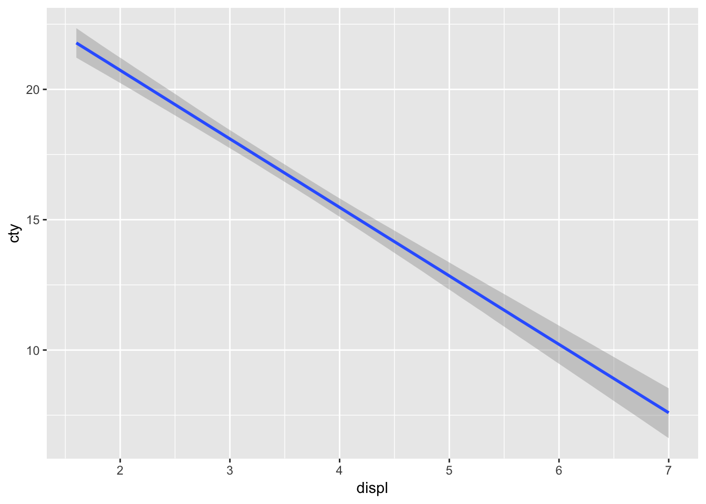

brmsパッケージを使って
準備
パッケージの読み込み
library(brms)## Loading required package: Rcpp## Loading required package: ggplot2## Loading 'brms' package (version 2.7.0). Useful instructions
## can be found by typing help('brms'). A more detailed introduction
## to the package is available through vignette('brms_overview').
## Run theme_set(theme_default()) to use the default bayesplot theme.library(tidyverse)## ─ Attaching packages ────────────────────────────────── tidyverse 1.2.1 ─## ✔ tibble 2.0.1 ✔ purrr 0.3.1
## ✔ tidyr 0.8.3 ✔ dplyr 0.8.0.1
## ✔ readr 1.3.1 ✔ stringr 1.4.0
## ✔ tibble 2.0.1 ✔ forcats 0.4.0## ─ Conflicts ──────────────────────────────────── tidyverse_conflicts() ─
## ✖ dplyr::filter() masks stats::filter()
## ✖ dplyr::lag() masks stats::lag()データ
今回使うデータははRの持っているサンプルデータです。 車のメーカ(manufacture)，モデル(model)，排気量(displ)，製造年(year)，気筒数(cyl)，オートマ・マニュアルの別(trans), 駆動輪(drv)，市街地での燃費(cty)，高速道路での燃費(hwy)などからなるデータセットです。
data(mpg)
# 少しみてみる
head(mpg)| manufacturer | model | displ | year | cyl | trans | drv | cty | hwy | fl | class |
|---|---|---|---|---|---|---|---|---|---|---|
| audi | a4 | 1.8 | 1999 | 4 | auto(l5) | f | 18 | 29 | p | compact |
| audi | a4 | 1.8 | 1999 | 4 | manual(m5) | f | 21 | 29 | p | compact |
| audi | a4 | 2.0 | 2008 | 4 | manual(m6) | f | 20 | 31 | p | compact |
| audi | a4 | 2.0 | 2008 | 4 | auto(av) | f | 21 | 30 | p | compact |
| audi | a4 | 2.8 | 1999 | 6 | auto(l5) | f | 16 | 26 | p | compact |
| audi | a4 | 2.8 | 1999 | 6 | manual(m5) | f | 18 | 26 | p | compact |
可視化してみましょう
排気量と市街地での燃費の関係をグラフにします。
g <- ggplot(mpg,aes(x=displ,y=cty))+geom_point()
plot(g)
回帰線を追加します。
g <- g + geom_smooth(method='lm')
plot(g)
最尤法による回帰
summary(lm(cty~displ,data=mpg))##
## Call:
## lm(formula = cty ~ displ, data = mpg)
##
## Residuals:
## Min 1Q Median 3Q Max
## -6.3109 -1.4695 -0.2566 1.1087 14.0064
##
## Coefficients:
## Estimate Std. Error t value Pr(>|t|)
## (Intercept) 25.9915 0.4821 53.91 <2e-16 ***
## displ -2.6305 0.1302 -20.20 <2e-16 ***
## ---
## Signif. codes: 0 '***' 0.001 '**' 0.01 '*' 0.05 '.' 0.1 ' ' 1
##
## Residual standard error: 2.567 on 232 degrees of freedom
## Multiple R-squared: 0.6376, Adjusted R-squared: 0.6361
## F-statistic: 408.2 on 1 and 232 DF, p-value: < 2.2e-16回帰線のベイズ推定
result.brm <- brm(cty~displ,data=mpg)## Compiling the C++ model## Start sampling##
## SAMPLING FOR MODEL '7e5af2e7cd64c4d926e4c21aec634789' NOW (CHAIN 1).
## Chain 1:
## Chain 1: Gradient evaluation took 4.2e-05 seconds
## Chain 1: 1000 transitions using 10 leapfrog steps per transition would take 0.42 seconds.
## Chain 1: Adjust your expectations accordingly!
## Chain 1:
## Chain 1:
## Chain 1: Iteration: 1 / 2000 [ 0%] (Warmup)
## Chain 1: Iteration: 200 / 2000 [ 10%] (Warmup)
## Chain 1: Iteration: 400 / 2000 [ 20%] (Warmup)
## Chain 1: Iteration: 600 / 2000 [ 30%] (Warmup)
## Chain 1: Iteration: 800 / 2000 [ 40%] (Warmup)
## Chain 1: Iteration: 1000 / 2000 [ 50%] (Warmup)
## Chain 1: Iteration: 1001 / 2000 [ 50%] (Sampling)
## Chain 1: Iteration: 1200 / 2000 [ 60%] (Sampling)
## Chain 1: Iteration: 1400 / 2000 [ 70%] (Sampling)
## Chain 1: Iteration: 1600 / 2000 [ 80%] (Sampling)
## Chain 1: Iteration: 1800 / 2000 [ 90%] (Sampling)
## Chain 1: Iteration: 2000 / 2000 [100%] (Sampling)
## Chain 1:
## Chain 1: Elapsed Time: 0.057783 seconds (Warm-up)
## Chain 1: 0.047749 seconds (Sampling)
## Chain 1: 0.105532 seconds (Total)
## Chain 1:
##
## SAMPLING FOR MODEL '7e5af2e7cd64c4d926e4c21aec634789' NOW (CHAIN 2).
## Chain 2:
## Chain 2: Gradient evaluation took 1.5e-05 seconds
## Chain 2: 1000 transitions using 10 leapfrog steps per transition would take 0.15 seconds.
## Chain 2: Adjust your expectations accordingly!
## Chain 2:
## Chain 2:
## Chain 2: Iteration: 1 / 2000 [ 0%] (Warmup)
## Chain 2: Iteration: 200 / 2000 [ 10%] (Warmup)
## Chain 2: Iteration: 400 / 2000 [ 20%] (Warmup)
## Chain 2: Iteration: 600 / 2000 [ 30%] (Warmup)
## Chain 2: Iteration: 800 / 2000 [ 40%] (Warmup)
## Chain 2: Iteration: 1000 / 2000 [ 50%] (Warmup)
## Chain 2: Iteration: 1001 / 2000 [ 50%] (Sampling)
## Chain 2: Iteration: 1200 / 2000 [ 60%] (Sampling)
## Chain 2: Iteration: 1400 / 2000 [ 70%] (Sampling)
## Chain 2: Iteration: 1600 / 2000 [ 80%] (Sampling)
## Chain 2: Iteration: 1800 / 2000 [ 90%] (Sampling)
## Chain 2: Iteration: 2000 / 2000 [100%] (Sampling)
## Chain 2:
## Chain 2: Elapsed Time: 0.057174 seconds (Warm-up)
## Chain 2: 0.092456 seconds (Sampling)
## Chain 2: 0.14963 seconds (Total)
## Chain 2:
##
## SAMPLING FOR MODEL '7e5af2e7cd64c4d926e4c21aec634789' NOW (CHAIN 3).
## Chain 3:
## Chain 3: Gradient evaluation took 1.3e-05 seconds
## Chain 3: 1000 transitions using 10 leapfrog steps per transition would take 0.13 seconds.
## Chain 3: Adjust your expectations accordingly!
## Chain 3:
## Chain 3:
## Chain 3: Iteration: 1 / 2000 [ 0%] (Warmup)
## Chain 3: Iteration: 200 / 2000 [ 10%] (Warmup)
## Chain 3: Iteration: 400 / 2000 [ 20%] (Warmup)
## Chain 3: Iteration: 600 / 2000 [ 30%] (Warmup)
## Chain 3: Iteration: 800 / 2000 [ 40%] (Warmup)
## Chain 3: Iteration: 1000 / 2000 [ 50%] (Warmup)
## Chain 3: Iteration: 1001 / 2000 [ 50%] (Sampling)
## Chain 3: Iteration: 1200 / 2000 [ 60%] (Sampling)
## Chain 3: Iteration: 1400 / 2000 [ 70%] (Sampling)
## Chain 3: Iteration: 1600 / 2000 [ 80%] (Sampling)
## Chain 3: Iteration: 1800 / 2000 [ 90%] (Sampling)
## Chain 3: Iteration: 2000 / 2000 [100%] (Sampling)
## Chain 3:
## Chain 3: Elapsed Time: 0.056806 seconds (Warm-up)
## Chain 3: 0.090612 seconds (Sampling)
## Chain 3: 0.147418 seconds (Total)
## Chain 3:
##
## SAMPLING FOR MODEL '7e5af2e7cd64c4d926e4c21aec634789' NOW (CHAIN 4).
## Chain 4:
## Chain 4: Gradient evaluation took 1.3e-05 seconds
## Chain 4: 1000 transitions using 10 leapfrog steps per transition would take 0.13 seconds.
## Chain 4: Adjust your expectations accordingly!
## Chain 4:
## Chain 4:
## Chain 4: Iteration: 1 / 2000 [ 0%] (Warmup)
## Chain 4: Iteration: 200 / 2000 [ 10%] (Warmup)
## Chain 4: Iteration: 400 / 2000 [ 20%] (Warmup)
## Chain 4: Iteration: 600 / 2000 [ 30%] (Warmup)
## Chain 4: Iteration: 800 / 2000 [ 40%] (Warmup)
## Chain 4: Iteration: 1000 / 2000 [ 50%] (Warmup)
## Chain 4: Iteration: 1001 / 2000 [ 50%] (Sampling)
## Chain 4: Iteration: 1200 / 2000 [ 60%] (Sampling)
## Chain 4: Iteration: 1400 / 2000 [ 70%] (Sampling)
## Chain 4: Iteration: 1600 / 2000 [ 80%] (Sampling)
## Chain 4: Iteration: 1800 / 2000 [ 90%] (Sampling)
## Chain 4: Iteration: 2000 / 2000 [100%] (Sampling)
## Chain 4:
## Chain 4: Elapsed Time: 0.058578 seconds (Warm-up)
## Chain 4: 0.051714 seconds (Sampling)
## Chain 4: 0.110292 seconds (Total)
## Chain 4:result.brm## Family: gaussian
## Links: mu = identity; sigma = identity
## Formula: cty ~ displ
## Data: mpg (Number of observations: 234)
## Samples: 4 chains, each with iter = 2000; warmup = 1000; thin = 1;
## total post-warmup samples = 4000
##
## Population-Level Effects:
## Estimate Est.Error l-95% CI u-95% CI Eff.Sample Rhat
## Intercept 25.99 0.48 25.07 26.93 4391 1.00
## displ -2.63 0.13 -2.89 -2.38 4268 1.00
##
## Family Specific Parameters:
## Estimate Est.Error l-95% CI u-95% CI Eff.Sample Rhat
## sigma 2.58 0.12 2.36 2.82 4423 1.00
##
## Samples were drawn using sampling(NUTS). For each parameter, Eff.Sample
## is a crude measure of effective sample size, and Rhat is the potential
## scale reduction factor on split chains (at convergence, Rhat = 1).結果のプロット
事後分布とトレースプロット
plot(result.brm)
MCMCサンプルをみてみる
# 取り出し -> データフレーム型へ -> 頭の10行だけ表示
rstan::extract(result.brm$fit) %>% data.frame %>% head(10)| b_Intercept | b | sigma | lp__ |
|---|---|---|---|
| 25.11060 | -2.370101 | 2.674755 | -558.9614 |
| 26.04493 | -2.606203 | 2.549161 | -557.0499 |
| 26.20681 | -2.735127 | 2.681749 | -557.8145 |
| 26.39549 | -2.743991 | 2.490659 | -557.2777 |
| 25.93521 | -2.619741 | 2.653101 | -556.9761 |
| 26.67031 | -2.762573 | 2.596664 | -558.0733 |
| 25.65094 | -2.549842 | 2.743078 | -557.9566 |
| 25.35317 | -2.505538 | 2.422382 | -558.7917 |
| 26.29992 | -2.739840 | 2.645074 | -557.3383 |
| 26.70885 | -2.785200 | 2.497674 | -558.1914 |
回帰線のグラフ
plot(marginal_effects(result.brm))
事後予測分布
pp_check(result.brm)## Using 10 posterior samples for ppc type 'dens_overlay' by default.
事後予測分布
predict(result.brm) %>% head(10)## Estimate Est.Error Q2.5 Q97.5
## [1,] 21.31048 2.599970 16.09270 26.31486
## [2,] 21.31205 2.573370 16.27210 26.22410
## [3,] 20.68270 2.646399 15.46692 26.10699
## [4,] 20.80638 2.563281 15.68658 25.83451
## [5,] 18.63636 2.603001 13.50303 23.74901
## [6,] 18.66532 2.569043 13.56937 23.55285
## [7,] 17.93478 2.642655 12.84637 23.23644
## [8,] 21.21270 2.583297 16.13018 26.31577
## [9,] 21.25033 2.622059 16.03771 26.29970
## [10,] 20.74153 2.587537 15.60967 25.75037分析に使ったstanコードも出力できる
result.brm$model## // generated with brms 2.7.0
## functions {
## }
## data {
## int<lower=1> N; // total number of observations
## vector[N] Y; // response variable
## int<lower=1> K; // number of population-level effects
## matrix[N, K] X; // population-level design matrix
## int prior_only; // should the likelihood be ignored?
## }
## transformed data {
## int Kc = K - 1;
## matrix[N, K - 1] Xc; // centered version of X
## vector[K - 1] means_X; // column means of X before centering
## for (i in 2:K) {
## means_X[i - 1] = mean(X[, i]);
## Xc[, i - 1] = X[, i] - means_X[i - 1];
## }
## }
## parameters {
## vector[Kc] b; // population-level effects
## real temp_Intercept; // temporary intercept
## real<lower=0> sigma; // residual SD
## }
## transformed parameters {
## }
## model {
## vector[N] mu = temp_Intercept + Xc * b;
## // priors including all constants
## target += student_t_lpdf(temp_Intercept | 3, 17, 10);
## target += student_t_lpdf(sigma | 3, 0, 10)
## - 1 * student_t_lccdf(0 | 3, 0, 10);
## // likelihood including all constants
## if (!prior_only) {
## target += normal_lpdf(Y | mu, sigma);
## }
## }
## generated quantities {
## // actual population-level intercept
## real b_Intercept = temp_Intercept - dot_product(means_X, b);
## }一般線形モデル
平均値の差の検定なども，brmsパッケージを使った方が簡単・確実・わかりやすい。
mpg$manufacturer <- as.factor(mpg$manufacturer)
result.anova <- brm(cty~manufacturer,data=mpg)## Compiling the C++ model## recompiling to avoid crashing R session## Start sampling##
## SAMPLING FOR MODEL '7e5af2e7cd64c4d926e4c21aec634789' NOW (CHAIN 1).
## Chain 1:
## Chain 1: Gradient evaluation took 4.1e-05 seconds
## Chain 1: 1000 transitions using 10 leapfrog steps per transition would take 0.41 seconds.
## Chain 1: Adjust your expectations accordingly!
## Chain 1:
## Chain 1:
## Chain 1: Iteration: 1 / 2000 [ 0%] (Warmup)
## Chain 1: Iteration: 200 / 2000 [ 10%] (Warmup)
## Chain 1: Iteration: 400 / 2000 [ 20%] (Warmup)
## Chain 1: Iteration: 600 / 2000 [ 30%] (Warmup)
## Chain 1: Iteration: 800 / 2000 [ 40%] (Warmup)
## Chain 1: Iteration: 1000 / 2000 [ 50%] (Warmup)
## Chain 1: Iteration: 1001 / 2000 [ 50%] (Sampling)
## Chain 1: Iteration: 1200 / 2000 [ 60%] (Sampling)
## Chain 1: Iteration: 1400 / 2000 [ 70%] (Sampling)
## Chain 1: Iteration: 1600 / 2000 [ 80%] (Sampling)
## Chain 1: Iteration: 1800 / 2000 [ 90%] (Sampling)
## Chain 1: Iteration: 2000 / 2000 [100%] (Sampling)
## Chain 1:
## Chain 1: Elapsed Time: 0.334155 seconds (Warm-up)
## Chain 1: 0.153942 seconds (Sampling)
## Chain 1: 0.488097 seconds (Total)
## Chain 1:
##
## SAMPLING FOR MODEL '7e5af2e7cd64c4d926e4c21aec634789' NOW (CHAIN 2).
## Chain 2:
## Chain 2: Gradient evaluation took 2.1e-05 seconds
## Chain 2: 1000 transitions using 10 leapfrog steps per transition would take 0.21 seconds.
## Chain 2: Adjust your expectations accordingly!
## Chain 2:
## Chain 2:
## Chain 2: Iteration: 1 / 2000 [ 0%] (Warmup)
## Chain 2: Iteration: 200 / 2000 [ 10%] (Warmup)
## Chain 2: Iteration: 400 / 2000 [ 20%] (Warmup)
## Chain 2: Iteration: 600 / 2000 [ 30%] (Warmup)
## Chain 2: Iteration: 800 / 2000 [ 40%] (Warmup)
## Chain 2: Iteration: 1000 / 2000 [ 50%] (Warmup)
## Chain 2: Iteration: 1001 / 2000 [ 50%] (Sampling)
## Chain 2: Iteration: 1200 / 2000 [ 60%] (Sampling)
## Chain 2: Iteration: 1400 / 2000 [ 70%] (Sampling)
## Chain 2: Iteration: 1600 / 2000 [ 80%] (Sampling)
## Chain 2: Iteration: 1800 / 2000 [ 90%] (Sampling)
## Chain 2: Iteration: 2000 / 2000 [100%] (Sampling)
## Chain 2:
## Chain 2: Elapsed Time: 0.309518 seconds (Warm-up)
## Chain 2: 0.154132 seconds (Sampling)
## Chain 2: 0.46365 seconds (Total)
## Chain 2:
##
## SAMPLING FOR MODEL '7e5af2e7cd64c4d926e4c21aec634789' NOW (CHAIN 3).
## Chain 3:
## Chain 3: Gradient evaluation took 2.4e-05 seconds
## Chain 3: 1000 transitions using 10 leapfrog steps per transition would take 0.24 seconds.
## Chain 3: Adjust your expectations accordingly!
## Chain 3:
## Chain 3:
## Chain 3: Iteration: 1 / 2000 [ 0%] (Warmup)
## Chain 3: Iteration: 200 / 2000 [ 10%] (Warmup)
## Chain 3: Iteration: 400 / 2000 [ 20%] (Warmup)
## Chain 3: Iteration: 600 / 2000 [ 30%] (Warmup)
## Chain 3: Iteration: 800 / 2000 [ 40%] (Warmup)
## Chain 3: Iteration: 1000 / 2000 [ 50%] (Warmup)
## Chain 3: Iteration: 1001 / 2000 [ 50%] (Sampling)
## Chain 3: Iteration: 1200 / 2000 [ 60%] (Sampling)
## Chain 3: Iteration: 1400 / 2000 [ 70%] (Sampling)
## Chain 3: Iteration: 1600 / 2000 [ 80%] (Sampling)
## Chain 3: Iteration: 1800 / 2000 [ 90%] (Sampling)
## Chain 3: Iteration: 2000 / 2000 [100%] (Sampling)
## Chain 3:
## Chain 3: Elapsed Time: 0.352115 seconds (Warm-up)
## Chain 3: 0.151807 seconds (Sampling)
## Chain 3: 0.503922 seconds (Total)
## Chain 3:
##
## SAMPLING FOR MODEL '7e5af2e7cd64c4d926e4c21aec634789' NOW (CHAIN 4).
## Chain 4:
## Chain 4: Gradient evaluation took 2.3e-05 seconds
## Chain 4: 1000 transitions using 10 leapfrog steps per transition would take 0.23 seconds.
## Chain 4: Adjust your expectations accordingly!
## Chain 4:
## Chain 4:
## Chain 4: Iteration: 1 / 2000 [ 0%] (Warmup)
## Chain 4: Iteration: 200 / 2000 [ 10%] (Warmup)
## Chain 4: Iteration: 400 / 2000 [ 20%] (Warmup)
## Chain 4: Iteration: 600 / 2000 [ 30%] (Warmup)
## Chain 4: Iteration: 800 / 2000 [ 40%] (Warmup)
## Chain 4: Iteration: 1000 / 2000 [ 50%] (Warmup)
## Chain 4: Iteration: 1001 / 2000 [ 50%] (Sampling)
## Chain 4: Iteration: 1200 / 2000 [ 60%] (Sampling)
## Chain 4: Iteration: 1400 / 2000 [ 70%] (Sampling)
## Chain 4: Iteration: 1600 / 2000 [ 80%] (Sampling)
## Chain 4: Iteration: 1800 / 2000 [ 90%] (Sampling)
## Chain 4: Iteration: 2000 / 2000 [100%] (Sampling)
## Chain 4:
## Chain 4: Elapsed Time: 0.348624 seconds (Warm-up)
## Chain 4: 0.150718 seconds (Sampling)
## Chain 4: 0.499342 seconds (Total)
## Chain 4:result.anova## Family: gaussian
## Links: mu = identity; sigma = identity
## Formula: cty ~ manufacturer
## Data: mpg (Number of observations: 234)
## Samples: 4 chains, each with iter = 2000; warmup = 1000; thin = 1;
## total post-warmup samples = 4000
##
## Population-Level Effects:
## Estimate Est.Error l-95% CI u-95% CI Eff.Sample
## Intercept 17.58 0.69 16.23 18.94 799
## manufacturerchevrolet -2.58 0.95 -4.46 -0.72 1234
## manufacturerdodge -4.45 0.85 -6.11 -2.79 1061
## manufacturerford -3.58 0.90 -5.38 -1.78 1218
## manufacturerhonda 6.85 1.18 4.47 9.18 1593
## manufacturerhyundai 1.06 1.06 -1.07 3.07 1476
## manufacturerjeep -4.06 1.24 -6.47 -1.63 1696
## manufacturerlandrover -6.09 1.63 -9.41 -2.94 2649
## manufacturerlincoln -6.22 1.83 -9.69 -2.52 3131
## manufacturermercury -4.31 1.62 -7.39 -1.13 2554
## manufacturernissan 0.48 1.04 -1.63 2.47 1373
## manufacturerpontiac -0.57 1.45 -3.41 2.27 2153
## manufacturersubaru 1.70 1.07 -0.34 3.82 1494
## manufacturertoyota 0.96 0.87 -0.73 2.66 1098
## manufacturervolkswagen 3.35 0.91 1.57 5.15 1090
## Rhat
## Intercept 1.00
## manufacturerchevrolet 1.00
## manufacturerdodge 1.00
## manufacturerford 1.00
## manufacturerhonda 1.00
## manufacturerhyundai 1.00
## manufacturerjeep 1.00
## manufacturerlandrover 1.00
## manufacturerlincoln 1.00
## manufacturermercury 1.00
## manufacturernissan 1.00
## manufacturerpontiac 1.00
## manufacturersubaru 1.00
## manufacturertoyota 1.00
## manufacturervolkswagen 1.00
##
## Family Specific Parameters:
## Estimate Est.Error l-95% CI u-95% CI Eff.Sample Rhat
## sigma 2.94 0.14 2.69 3.23 5423 1.00
##
## Samples were drawn using sampling(NUTS). For each parameter, Eff.Sample
## is a crude measure of effective sample size, and Rhat is the potential
## scale reduction factor on split chains (at convergence, Rhat = 1).plot(marginal_effects(result.anova))
階層線形モデル
各群に回帰線を当てはめますが，その全体的な傾向も要約して表します。 群ごとの散らばりを分布から作られているもの，と考えるところがミソです。
ランダム切片モデル
切片が群ごとに異なる，というモデルを考えます。 今回は，15のメーカによって切片が違うとします。
result.hlm1 <- brm(cty~displ+(1|manufacturer),data=mpg)## Compiling the C++ model## Start sampling##
## SAMPLING FOR MODEL '9fac491b11fc784e76e04c51fb3d0c72' NOW (CHAIN 1).
## Chain 1:
## Chain 1: Gradient evaluation took 4.6e-05 seconds
## Chain 1: 1000 transitions using 10 leapfrog steps per transition would take 0.46 seconds.
## Chain 1: Adjust your expectations accordingly!
## Chain 1:
## Chain 1:
## Chain 1: Iteration: 1 / 2000 [ 0%] (Warmup)
## Chain 1: Iteration: 200 / 2000 [ 10%] (Warmup)
## Chain 1: Iteration: 400 / 2000 [ 20%] (Warmup)
## Chain 1: Iteration: 600 / 2000 [ 30%] (Warmup)
## Chain 1: Iteration: 800 / 2000 [ 40%] (Warmup)
## Chain 1: Iteration: 1000 / 2000 [ 50%] (Warmup)
## Chain 1: Iteration: 1001 / 2000 [ 50%] (Sampling)
## Chain 1: Iteration: 1200 / 2000 [ 60%] (Sampling)
## Chain 1: Iteration: 1400 / 2000 [ 70%] (Sampling)
## Chain 1: Iteration: 1600 / 2000 [ 80%] (Sampling)
## Chain 1: Iteration: 1800 / 2000 [ 90%] (Sampling)
## Chain 1: Iteration: 2000 / 2000 [100%] (Sampling)
## Chain 1:
## Chain 1: Elapsed Time: 0.316467 seconds (Warm-up)
## Chain 1: 0.27636 seconds (Sampling)
## Chain 1: 0.592827 seconds (Total)
## Chain 1:
##
## SAMPLING FOR MODEL '9fac491b11fc784e76e04c51fb3d0c72' NOW (CHAIN 2).
## Chain 2:
## Chain 2: Gradient evaluation took 2.1e-05 seconds
## Chain 2: 1000 transitions using 10 leapfrog steps per transition would take 0.21 seconds.
## Chain 2: Adjust your expectations accordingly!
## Chain 2:
## Chain 2:
## Chain 2: Iteration: 1 / 2000 [ 0%] (Warmup)
## Chain 2: Iteration: 200 / 2000 [ 10%] (Warmup)
## Chain 2: Iteration: 400 / 2000 [ 20%] (Warmup)
## Chain 2: Iteration: 600 / 2000 [ 30%] (Warmup)
## Chain 2: Iteration: 800 / 2000 [ 40%] (Warmup)
## Chain 2: Iteration: 1000 / 2000 [ 50%] (Warmup)
## Chain 2: Iteration: 1001 / 2000 [ 50%] (Sampling)
## Chain 2: Iteration: 1200 / 2000 [ 60%] (Sampling)
## Chain 2: Iteration: 1400 / 2000 [ 70%] (Sampling)
## Chain 2: Iteration: 1600 / 2000 [ 80%] (Sampling)
## Chain 2: Iteration: 1800 / 2000 [ 90%] (Sampling)
## Chain 2: Iteration: 2000 / 2000 [100%] (Sampling)
## Chain 2:
## Chain 2: Elapsed Time: 0.297376 seconds (Warm-up)
## Chain 2: 0.245653 seconds (Sampling)
## Chain 2: 0.543029 seconds (Total)
## Chain 2:
##
## SAMPLING FOR MODEL '9fac491b11fc784e76e04c51fb3d0c72' NOW (CHAIN 3).
## Chain 3:
## Chain 3: Gradient evaluation took 1.9e-05 seconds
## Chain 3: 1000 transitions using 10 leapfrog steps per transition would take 0.19 seconds.
## Chain 3: Adjust your expectations accordingly!
## Chain 3:
## Chain 3:
## Chain 3: Iteration: 1 / 2000 [ 0%] (Warmup)
## Chain 3: Iteration: 200 / 2000 [ 10%] (Warmup)
## Chain 3: Iteration: 400 / 2000 [ 20%] (Warmup)
## Chain 3: Iteration: 600 / 2000 [ 30%] (Warmup)
## Chain 3: Iteration: 800 / 2000 [ 40%] (Warmup)
## Chain 3: Iteration: 1000 / 2000 [ 50%] (Warmup)
## Chain 3: Iteration: 1001 / 2000 [ 50%] (Sampling)
## Chain 3: Iteration: 1200 / 2000 [ 60%] (Sampling)
## Chain 3: Iteration: 1400 / 2000 [ 70%] (Sampling)
## Chain 3: Iteration: 1600 / 2000 [ 80%] (Sampling)
## Chain 3: Iteration: 1800 / 2000 [ 90%] (Sampling)
## Chain 3: Iteration: 2000 / 2000 [100%] (Sampling)
## Chain 3:
## Chain 3: Elapsed Time: 0.30527 seconds (Warm-up)
## Chain 3: 0.246909 seconds (Sampling)
## Chain 3: 0.552179 seconds (Total)
## Chain 3:
##
## SAMPLING FOR MODEL '9fac491b11fc784e76e04c51fb3d0c72' NOW (CHAIN 4).
## Chain 4:
## Chain 4: Gradient evaluation took 4e-05 seconds
## Chain 4: 1000 transitions using 10 leapfrog steps per transition would take 0.4 seconds.
## Chain 4: Adjust your expectations accordingly!
## Chain 4:
## Chain 4:
## Chain 4: Iteration: 1 / 2000 [ 0%] (Warmup)
## Chain 4: Iteration: 200 / 2000 [ 10%] (Warmup)
## Chain 4: Iteration: 400 / 2000 [ 20%] (Warmup)
## Chain 4: Iteration: 600 / 2000 [ 30%] (Warmup)
## Chain 4: Iteration: 800 / 2000 [ 40%] (Warmup)
## Chain 4: Iteration: 1000 / 2000 [ 50%] (Warmup)
## Chain 4: Iteration: 1001 / 2000 [ 50%] (Sampling)
## Chain 4: Iteration: 1200 / 2000 [ 60%] (Sampling)
## Chain 4: Iteration: 1400 / 2000 [ 70%] (Sampling)
## Chain 4: Iteration: 1600 / 2000 [ 80%] (Sampling)
## Chain 4: Iteration: 1800 / 2000 [ 90%] (Sampling)
## Chain 4: Iteration: 2000 / 2000 [100%] (Sampling)
## Chain 4:
## Chain 4: Elapsed Time: 0.305949 seconds (Warm-up)
## Chain 4: 0.251213 seconds (Sampling)
## Chain 4: 0.557162 seconds (Total)
## Chain 4:結果は次の通り。
# 結果（要約）
result.hlm1## Family: gaussian
## Links: mu = identity; sigma = identity
## Formula: cty ~ displ + (1 | manufacturer)
## Data: mpg (Number of observations: 234)
## Samples: 4 chains, each with iter = 2000; warmup = 1000; thin = 1;
## total post-warmup samples = 4000
##
## Group-Level Effects:
## ~manufacturer (Number of levels: 15)
## Estimate Est.Error l-95% CI u-95% CI Eff.Sample Rhat
## sd(Intercept) 1.52 0.41 0.89 2.45 1225 1.00
##
## Population-Level Effects:
## Estimate Est.Error l-95% CI u-95% CI Eff.Sample Rhat
## Intercept 25.51 0.77 23.98 26.96 2074 1.00
## displ -2.49 0.18 -2.85 -2.15 3053 1.00
##
## Family Specific Parameters:
## Estimate Est.Error l-95% CI u-95% CI Eff.Sample Rhat
## sigma 2.28 0.11 2.08 2.50 4543 1.00
##
## Samples were drawn using sampling(NUTS). For each parameter, Eff.Sample
## is a crude measure of effective sample size, and Rhat is the potential
## scale reduction factor on split chains (at convergence, Rhat = 1).# 推定値
result.hlm1$fit## Inference for Stan model: 9fac491b11fc784e76e04c51fb3d0c72.
## 4 chains, each with iter=2000; warmup=1000; thin=1;
## post-warmup draws per chain=1000, total post-warmup draws=4000.
##
## mean se_mean sd 2.5% 25%
## b_Intercept 25.51 0.02 0.77 23.98 25.02
## b_displ -2.49 0.00 0.18 -2.85 -2.61
## sd_manufacturer__Intercept 1.52 0.01 0.41 0.89 1.23
## sigma 2.28 0.00 0.11 2.08 2.21
## r_manufacturer[audi,Intercept] -1.36 0.01 0.66 -2.67 -1.78
## r_manufacturer[chevrolet,Intercept] 1.86 0.01 0.66 0.63 1.43
## r_manufacturer[dodge,Intercept] -1.36 0.01 0.54 -2.48 -1.70
## r_manufacturer[ford,Intercept] -0.18 0.01 0.59 -1.39 -0.57
## r_manufacturer[honda,Intercept] 2.49 0.02 0.87 0.85 1.88
## r_manufacturer[hyundai,Intercept] -0.68 0.01 0.69 -2.05 -1.14
## r_manufacturer[jeep,Intercept] -0.46 0.02 0.79 -2.04 -0.97
## r_manufacturer[land.rover,Intercept] -2.04 0.02 1.06 -4.22 -2.73
## r_manufacturer[lincoln,Intercept] -0.39 0.02 1.02 -2.41 -1.07
## r_manufacturer[mercury,Intercept] -0.79 0.02 0.96 -2.75 -1.41
## r_manufacturer[nissan,Intercept] 0.60 0.01 0.70 -0.77 0.13
## r_manufacturer[pontiac,Intercept] 0.90 0.01 0.89 -0.80 0.29
## r_manufacturer[subaru,Intercept] -0.08 0.01 0.69 -1.45 -0.54
## r_manufacturer[toyota,Intercept] 0.36 0.01 0.56 -0.70 -0.02
## r_manufacturer[volkswagen,Intercept] 0.95 0.01 0.62 -0.24 0.53
## lp__ -552.75 0.13 4.18 -562.11 -555.23
## 50% 75% 97.5% n_eff Rhat
## b_Intercept 25.52 26.02 26.96 2074 1
## b_displ -2.49 -2.37 -2.15 3053 1
## sd_manufacturer__Intercept 1.46 1.74 2.45 1225 1
## sigma 2.28 2.35 2.50 4543 1
## r_manufacturer[audi,Intercept] -1.34 -0.93 -0.07 2182 1
## r_manufacturer[chevrolet,Intercept] 1.86 2.30 3.20 2257 1
## r_manufacturer[dodge,Intercept] -1.35 -0.99 -0.32 1840 1
## r_manufacturer[ford,Intercept] -0.17 0.22 0.96 2212 1
## r_manufacturer[honda,Intercept] 2.46 3.06 4.29 2661 1
## r_manufacturer[hyundai,Intercept] -0.68 -0.22 0.67 2686 1
## r_manufacturer[jeep,Intercept] -0.46 0.08 1.08 2582 1
## r_manufacturer[land.rover,Intercept] -2.02 -1.31 -0.05 3190 1
## r_manufacturer[lincoln,Intercept] -0.39 0.30 1.60 4073 1
## r_manufacturer[mercury,Intercept] -0.77 -0.15 1.07 3878 1
## r_manufacturer[nissan,Intercept] 0.59 1.05 2.00 2490 1
## r_manufacturer[pontiac,Intercept] 0.88 1.46 2.73 3632 1
## r_manufacturer[subaru,Intercept] -0.09 0.39 1.27 2433 1
## r_manufacturer[toyota,Intercept] 0.36 0.72 1.47 1832 1
## r_manufacturer[volkswagen,Intercept] 0.95 1.34 2.17 1891 1
## lp__ -552.35 -549.81 -545.65 989 1
##
## Samples were drawn using NUTS(diag_e) at Tue Mar 5 18:20:00 2019.
## For each parameter, n_eff is a crude measure of effective sample size,
## and Rhat is the potential scale reduction factor on split chains (at
## convergence, Rhat=1).# 作図
mpg %>%
cbind(fitted(result.hlm1)) %>%
select(cty, displ, manufacturer, y_hat = Estimate) %>%
ggplot(aes(displ, y_hat, color = manufacturer)) +
geom_smooth(method = "lm", se = FALSE) +
geom_point(aes(y = cty)) + ylab("cty")ランダム係数モデル
result.hlm2 <- brm(cty~displ+(displ|manufacturer),data=mpg)## Compiling the C++ model## Start sampling##
## SAMPLING FOR MODEL '53e4e9542f8ef009be512e8b26497a07' NOW (CHAIN 1).
## Chain 1:
## Chain 1: Gradient evaluation took 6.7e-05 seconds
## Chain 1: 1000 transitions using 10 leapfrog steps per transition would take 0.67 seconds.
## Chain 1: Adjust your expectations accordingly!
## Chain 1:
## Chain 1:
## Chain 1: Iteration: 1 / 2000 [ 0%] (Warmup)
## Chain 1: Iteration: 200 / 2000 [ 10%] (Warmup)
## Chain 1: Iteration: 400 / 2000 [ 20%] (Warmup)
## Chain 1: Iteration: 600 / 2000 [ 30%] (Warmup)
## Chain 1: Iteration: 800 / 2000 [ 40%] (Warmup)
## Chain 1: Iteration: 1000 / 2000 [ 50%] (Warmup)
## Chain 1: Iteration: 1001 / 2000 [ 50%] (Sampling)
## Chain 1: Iteration: 1200 / 2000 [ 60%] (Sampling)
## Chain 1: Iteration: 1400 / 2000 [ 70%] (Sampling)
## Chain 1: Iteration: 1600 / 2000 [ 80%] (Sampling)
## Chain 1: Iteration: 1800 / 2000 [ 90%] (Sampling)
## Chain 1: Iteration: 2000 / 2000 [100%] (Sampling)
## Chain 1:
## Chain 1: Elapsed Time: 1.30263 seconds (Warm-up)
## Chain 1: 1.36318 seconds (Sampling)
## Chain 1: 2.66581 seconds (Total)
## Chain 1:
##
## SAMPLING FOR MODEL '53e4e9542f8ef009be512e8b26497a07' NOW (CHAIN 2).
## Chain 2:
## Chain 2: Gradient evaluation took 3.3e-05 seconds
## Chain 2: 1000 transitions using 10 leapfrog steps per transition would take 0.33 seconds.
## Chain 2: Adjust your expectations accordingly!
## Chain 2:
## Chain 2:
## Chain 2: Iteration: 1 / 2000 [ 0%] (Warmup)
## Chain 2: Iteration: 200 / 2000 [ 10%] (Warmup)
## Chain 2: Iteration: 400 / 2000 [ 20%] (Warmup)
## Chain 2: Iteration: 600 / 2000 [ 30%] (Warmup)
## Chain 2: Iteration: 800 / 2000 [ 40%] (Warmup)
## Chain 2: Iteration: 1000 / 2000 [ 50%] (Warmup)
## Chain 2: Iteration: 1001 / 2000 [ 50%] (Sampling)
## Chain 2: Iteration: 1200 / 2000 [ 60%] (Sampling)
## Chain 2: Iteration: 1400 / 2000 [ 70%] (Sampling)
## Chain 2: Iteration: 1600 / 2000 [ 80%] (Sampling)
## Chain 2: Iteration: 1800 / 2000 [ 90%] (Sampling)
## Chain 2: Iteration: 2000 / 2000 [100%] (Sampling)
## Chain 2:
## Chain 2: Elapsed Time: 1.45759 seconds (Warm-up)
## Chain 2: 1.36186 seconds (Sampling)
## Chain 2: 2.81945 seconds (Total)
## Chain 2:
##
## SAMPLING FOR MODEL '53e4e9542f8ef009be512e8b26497a07' NOW (CHAIN 3).
## Chain 3:
## Chain 3: Gradient evaluation took 5.9e-05 seconds
## Chain 3: 1000 transitions using 10 leapfrog steps per transition would take 0.59 seconds.
## Chain 3: Adjust your expectations accordingly!
## Chain 3:
## Chain 3:
## Chain 3: Iteration: 1 / 2000 [ 0%] (Warmup)
## Chain 3: Iteration: 200 / 2000 [ 10%] (Warmup)
## Chain 3: Iteration: 400 / 2000 [ 20%] (Warmup)
## Chain 3: Iteration: 600 / 2000 [ 30%] (Warmup)
## Chain 3: Iteration: 800 / 2000 [ 40%] (Warmup)
## Chain 3: Iteration: 1000 / 2000 [ 50%] (Warmup)
## Chain 3: Iteration: 1001 / 2000 [ 50%] (Sampling)
## Chain 3: Iteration: 1200 / 2000 [ 60%] (Sampling)
## Chain 3: Iteration: 1400 / 2000 [ 70%] (Sampling)
## Chain 3: Iteration: 1600 / 2000 [ 80%] (Sampling)
## Chain 3: Iteration: 1800 / 2000 [ 90%] (Sampling)
## Chain 3: Iteration: 2000 / 2000 [100%] (Sampling)
## Chain 3:
## Chain 3: Elapsed Time: 1.555 seconds (Warm-up)
## Chain 3: 0.811949 seconds (Sampling)
## Chain 3: 2.36695 seconds (Total)
## Chain 3:
##
## SAMPLING FOR MODEL '53e4e9542f8ef009be512e8b26497a07' NOW (CHAIN 4).
## Chain 4:
## Chain 4: Gradient evaluation took 2.9e-05 seconds
## Chain 4: 1000 transitions using 10 leapfrog steps per transition would take 0.29 seconds.
## Chain 4: Adjust your expectations accordingly!
## Chain 4:
## Chain 4:
## Chain 4: Iteration: 1 / 2000 [ 0%] (Warmup)
## Chain 4: Iteration: 200 / 2000 [ 10%] (Warmup)
## Chain 4: Iteration: 400 / 2000 [ 20%] (Warmup)
## Chain 4: Iteration: 600 / 2000 [ 30%] (Warmup)
## Chain 4: Iteration: 800 / 2000 [ 40%] (Warmup)
## Chain 4: Iteration: 1000 / 2000 [ 50%] (Warmup)
## Chain 4: Iteration: 1001 / 2000 [ 50%] (Sampling)
## Chain 4: Iteration: 1200 / 2000 [ 60%] (Sampling)
## Chain 4: Iteration: 1400 / 2000 [ 70%] (Sampling)
## Chain 4: Iteration: 1600 / 2000 [ 80%] (Sampling)
## Chain 4: Iteration: 1800 / 2000 [ 90%] (Sampling)
## Chain 4: Iteration: 2000 / 2000 [100%] (Sampling)
## Chain 4:
## Chain 4: Elapsed Time: 1.36996 seconds (Warm-up)
## Chain 4: 1.19265 seconds (Sampling)
## Chain 4: 2.56261 seconds (Total)
## Chain 4:## Warning: There were 13 divergent transitions after warmup. Increasing adapt_delta above 0.8 may help. See
## http://mc-stan.org/misc/warnings.html#divergent-transitions-after-warmup## Warning: Examine the pairs() plot to diagnose sampling problems結果は次の通り。
# 結果（要約）
result.hlm2## Warning: There were 13 divergent transitions after warmup. Increasing adapt_delta above 0.8 may help.
## See http://mc-stan.org/misc/warnings.html#divergent-transitions-after-warmup## Family: gaussian
## Links: mu = identity; sigma = identity
## Formula: cty ~ displ + (displ | manufacturer)
## Data: mpg (Number of observations: 234)
## Samples: 4 chains, each with iter = 2000; warmup = 1000; thin = 1;
## total post-warmup samples = 4000
##
## Group-Level Effects:
## ~manufacturer (Number of levels: 15)
## Estimate Est.Error l-95% CI u-95% CI Eff.Sample Rhat
## sd(Intercept) 3.20 1.04 1.48 5.52 1193 1.00
## sd(displ) 0.87 0.33 0.28 1.56 841 1.00
## cor(Intercept,displ) -0.88 0.20 -0.99 -0.32 697 1.00
##
## Population-Level Effects:
## Estimate Est.Error l-95% CI u-95% CI Eff.Sample Rhat
## Intercept 25.74 1.18 23.39 28.07 1836 1.00
## displ -2.66 0.32 -3.31 -2.03 1783 1.00
##
## Family Specific Parameters:
## Estimate Est.Error l-95% CI u-95% CI Eff.Sample Rhat
## sigma 2.20 0.11 1.99 2.43 3721 1.00
##
## Samples were drawn using sampling(NUTS). For each parameter, Eff.Sample
## is a crude measure of effective sample size, and Rhat is the potential
## scale reduction factor on split chains (at convergence, Rhat = 1).# 推定値
result.hlm2$fit## Inference for Stan model: 53e4e9542f8ef009be512e8b26497a07.
## 4 chains, each with iter=2000; warmup=1000; thin=1;
## post-warmup draws per chain=1000, total post-warmup draws=4000.
##
## mean se_mean sd 2.5% 25%
## b_Intercept 25.74 0.03 1.18 23.39 24.96
## b_displ -2.66 0.01 0.32 -3.31 -2.87
## sd_manufacturer__Intercept 3.20 0.03 1.04 1.48 2.48
## sd_manufacturer__displ 0.87 0.01 0.33 0.28 0.65
## cor_manufacturer__Intercept__displ -0.88 0.01 0.20 -0.99 -0.97
## sigma 2.20 0.00 0.11 1.99 2.12
## r_manufacturer[audi,Intercept] -2.73 0.04 1.77 -6.34 -3.87
## r_manufacturer[chevrolet,Intercept] -2.65 0.05 2.03 -6.50 -4.02
## r_manufacturer[dodge,Intercept] -2.15 0.04 1.84 -6.11 -3.30
## r_manufacturer[ford,Intercept] -0.45 0.04 2.31 -5.16 -1.92
## r_manufacturer[honda,Intercept] 4.51 0.05 1.96 1.02 3.13
## r_manufacturer[hyundai,Intercept] -1.24 0.04 1.97 -5.32 -2.45
## r_manufacturer[jeep,Intercept] -1.57 0.04 2.32 -6.41 -2.99
## r_manufacturer[land.rover,Intercept] 0.36 0.08 3.47 -6.45 -1.79
## r_manufacturer[lincoln,Intercept] -0.05 0.05 2.77 -5.84 -1.66
## r_manufacturer[mercury,Intercept] -0.53 0.05 2.91 -6.62 -2.35
## r_manufacturer[nissan,Intercept] 1.55 0.04 2.01 -2.41 0.20
## r_manufacturer[pontiac,Intercept] -1.48 0.07 3.04 -7.93 -3.32
## r_manufacturer[subaru,Intercept] 0.20 0.04 2.18 -4.34 -1.08
## r_manufacturer[toyota,Intercept] 2.64 0.04 1.59 -0.34 1.52
## r_manufacturer[volkswagen,Intercept] 3.44 0.05 1.86 0.24 2.12
## r_manufacturer[audi,displ] 0.60 0.01 0.59 -0.48 0.20
## r_manufacturer[chevrolet,displ] 1.02 0.01 0.47 0.09 0.71
## r_manufacturer[dodge,displ] 0.31 0.01 0.45 -0.54 0.00
## r_manufacturer[ford,displ] 0.17 0.01 0.55 -0.86 -0.20
## r_manufacturer[honda,displ] -1.00 0.02 0.78 -2.64 -1.50
## r_manufacturer[hyundai,displ] 0.29 0.01 0.67 -0.97 -0.14
## r_manufacturer[jeep,displ] 0.36 0.01 0.56 -0.67 -0.02
## r_manufacturer[land.rover,displ] -0.48 0.02 0.85 -2.28 -0.99
## r_manufacturer[lincoln,displ] 0.00 0.01 0.62 -1.24 -0.39
## r_manufacturer[mercury,displ] 0.03 0.01 0.72 -1.38 -0.41
## r_manufacturer[nissan,displ] -0.24 0.01 0.57 -1.38 -0.62
## r_manufacturer[pontiac,displ] 0.67 0.02 0.79 -0.71 0.12
## r_manufacturer[subaru,displ] -0.05 0.01 0.75 -1.58 -0.47
## r_manufacturer[toyota,displ] -0.69 0.01 0.46 -1.64 -0.99
## r_manufacturer[volkswagen,displ] -1.00 0.02 0.67 -2.48 -1.42
## lp__ -569.93 0.18 5.60 -581.80 -573.52
## 50% 75% 97.5% n_eff Rhat
## b_Intercept 25.76 26.50 28.07 1836 1.00
## b_displ -2.66 -2.45 -2.03 1783 1.00
## sd_manufacturer__Intercept 3.09 3.80 5.52 1193 1.00
## sd_manufacturer__displ 0.84 1.06 1.56 841 1.00
## cor_manufacturer__Intercept__displ -0.94 -0.87 -0.32 697 1.00
## sigma 2.20 2.27 2.43 3721 1.00
## r_manufacturer[audi,Intercept] -2.66 -1.53 0.63 2365 1.00
## r_manufacturer[chevrolet,Intercept] -2.68 -1.35 1.53 1409 1.00
## r_manufacturer[dodge,Intercept] -2.07 -0.94 1.38 2635 1.00
## r_manufacturer[ford,Intercept] -0.40 1.04 3.99 3052 1.00
## r_manufacturer[honda,Intercept] 4.45 5.77 8.53 1777 1.00
## r_manufacturer[hyundai,Intercept] -1.15 -0.01 2.55 2985 1.00
## r_manufacturer[jeep,Intercept] -1.41 -0.05 2.61 3328 1.00
## r_manufacturer[land.rover,Intercept] 0.27 2.51 7.44 2106 1.00
## r_manufacturer[lincoln,Intercept] 0.00 1.62 5.44 3276 1.00
## r_manufacturer[mercury,Intercept] -0.44 1.30 5.06 4136 1.00
## r_manufacturer[nissan,Intercept] 1.52 2.88 5.56 2856 1.00
## r_manufacturer[pontiac,Intercept] -1.30 0.55 4.08 2121 1.00
## r_manufacturer[subaru,Intercept] 0.22 1.49 4.71 2823 1.00
## r_manufacturer[toyota,Intercept] 2.58 3.70 5.82 1966 1.00
## r_manufacturer[volkswagen,Intercept] 3.36 4.63 7.36 1590 1.00
## r_manufacturer[audi,displ] 0.57 0.98 1.85 2078 1.00
## r_manufacturer[chevrolet,displ] 1.03 1.32 1.94 1400 1.00
## r_manufacturer[dodge,displ] 0.29 0.59 1.28 2394 1.00
## r_manufacturer[ford,displ] 0.15 0.51 1.31 2590 1.00
## r_manufacturer[honda,displ] -0.99 -0.47 0.46 1423 1.00
## r_manufacturer[hyundai,displ] 0.26 0.69 1.69 3093 1.00
## r_manufacturer[jeep,displ] 0.32 0.72 1.55 2990 1.00
## r_manufacturer[land.rover,displ] -0.43 0.06 1.10 2397 1.00
## r_manufacturer[lincoln,displ] -0.01 0.38 1.29 3282 1.00
## r_manufacturer[mercury,displ] 0.01 0.49 1.49 4145 1.00
## r_manufacturer[nissan,displ] -0.23 0.13 0.86 3014 1.00
## r_manufacturer[pontiac,displ] 0.60 1.15 2.38 2073 1.00
## r_manufacturer[subaru,displ] -0.06 0.39 1.54 2921 1.00
## r_manufacturer[toyota,displ] -0.68 -0.37 0.13 2106 1.00
## r_manufacturer[volkswagen,displ] -0.96 -0.53 0.15 1449 1.00
## lp__ -569.62 -566.00 -559.85 992 1.01
##
## Samples were drawn using NUTS(diag_e) at Tue Mar 5 18:20:45 2019.
## For each parameter, n_eff is a crude measure of effective sample size,
## and Rhat is the potential scale reduction factor on split chains (at
## convergence, Rhat=1).# 作図
mpg %>%
cbind(fitted(result.hlm2)) %>%
select(cty, displ, manufacturer, y_hat = Estimate) %>%
ggplot(aes(displ, y_hat, color = manufacturer)) +
geom_smooth(method = "lm", se = FALSE) +
geom_point(aes(y = cty)) + ylab("cty")